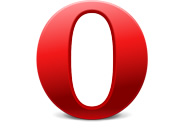
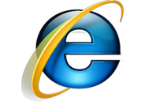

ВНИМАНИЕ! Вы используете устаревший браузер Internet Explorer 6-7
Данный сайт построен на передовых, современных технологиях и не поддерживает Internet Explorer 6-7 версии.
Настоятельно Вам рекомендуем выбрать и установить любой из современных браузеров. Это бесплатно и займет всего несколько минут.
|  |  | |||
| Mozilla Firefox | Google Chrome | Opera Browser | Apple Safari | Internet Explorer |
Почему нужно поменять браузер IE6-7 на другой?
Браузер Internet Explorer 6-7 является не просто браузером старой версии, а устаревшим браузером, браузером старого поколения. Он не может предоставить все возможности, которые могут предоставить современные браузеры, а скорость его работы в несколько раз ниже! Internet Explorer 6-7 не способен корректно отображать большинство сайтов.
Если по каким либо причинам Вы не имеете доступа к возможности установки программ, то рекомендуем воспользоваться "portable" версиями браузеров. Они не требуют инсталляции на компьютер и работают с любого диска или вашей флешки: Mozilla Firefox или Google Chrome.
БезопасностьИспользование IE6-7 потенциально опасно, так как именно через него доступ в Ваш компьютер имеют вирусы и мошенники. |
Только фактыIE6 был выпущен в 2001 году!Позже были созданы версии 7 и 8, вскоре ожидается следующая версия Internet Explorer. |
MicrosoftMicrosoft, разработчикInternetExplorer 6, прекратила его поддержку и рекомендует устанавливать новые версии своего браузера. |